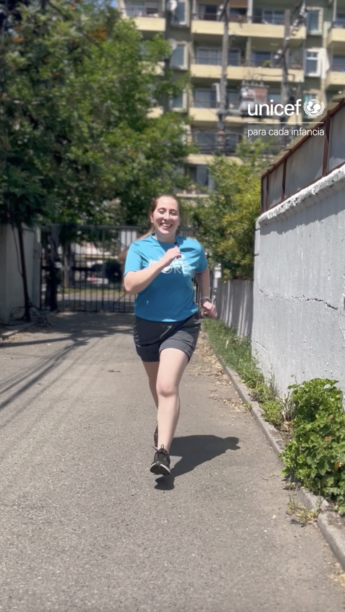
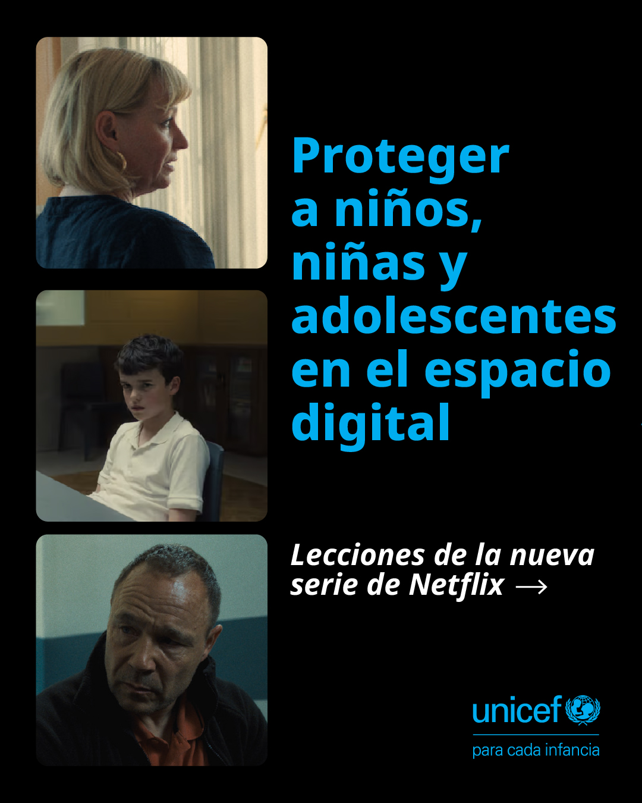
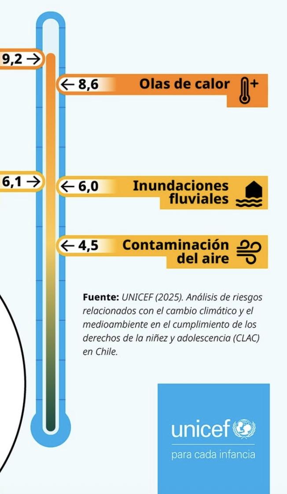

Creación de contenido
Diseño productos para medios masivos y redes sociales
Genero mensajes clave, a partir de la información, los valores y los objetivos de negocio, que luego adapto según particularidades de las audiencias y sus plataformas.

Relato verbal y audiovisual de un reel

Adaptación a guías descargables para generar leads

Carrusel de instagram sobre tema en tendencia
Narración verbal y audiovisual para landing.
Promoción de productos

Infografías para RRSS
Relevancia para Ruuf: Tengo la versatilidad para abordar múltiples formatos y plataformas a través de campañas, contenido always-on y abogacía sobre tópicos de interés.
Resultados destacados:
Orientado a contenido vivencial y cercano "que no parezca publicidad"
Manejo distintas herramientas de producción gráfica y audiovisual
Fortalezco la producción in-house con mayor rapidez vs agencias (2 semanas vs 3días o menos)
Capacidad para adaptar un tema a diversos formatos estratégicos